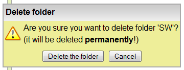
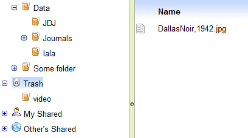
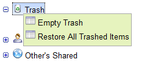
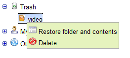
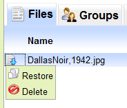

Μενού Edit: δύο επιλογές διαγραφής επιλεγμένου καταλόγου ή αρχείου

Folder context menu: δύο επιλογές διαγραφής

File context menu: δύο επιλογές διαγραφής
Το σύστημα υποστηρίζει δύο είδη διαγραφής για τους καταλόγους και τα αρχεία:
Οι πρόσβαση και στις δύο λειτουργίες γίνεται μέσω του μενού "Edit" ή των επιμέρους context
menus αφού πρώτα επιλεγεί ο κατάλογος ή το αρχείο. Η μεταφορά στο trash bin γίνεται μέσω
της επιλογής "Move to trash" ενώ η τελική διαγραφή μέσω της επιλογής "Delete". Στις παρακάτω
εικόνες φαίνονται αυτές οι επιλογές στα τρια σχετικά μενού.
|
Μενού Edit: δύο επιλογές διαγραφής επιλεγμένου καταλόγου ή αρχείου |
Folder context menu: δύο επιλογές διαγραφής |
File context menu: δύο επιλογές διαγραφής |
Η επιλογή μεταφοράς στο trash bin εκτελεί τη μεταφορά του επιλεγμένου στοιχείου (κατάλογος ή αρχείο) χωρίς
άλλη προειδοποίηση και ανανεώνει την όψη καταλόγων / αρχείων (το στοιχείο δεν εμφανίζεται πια). Αντίθετα
η επιλογή τελικής διαγραφής εμφανίζει σχετικό διάλογος επιβεβαίωσης με προειδοποίηση - μόνο με την
επιβεβαίωση από τον χρήστη το επιλεγμένο στοιχείο διαγράφεται ολοκληρωτικά. Οι παρακάτω εικόνες εμφανίζουν
τους διαλόγους αυτούς:
|

Διάλογος επιβεβαίωσης τελικής διαγραφής καταλόγου |

Διάλογος επιβεβαίωσης τελικής διαγραφής αρχείου |
Το σύστημα υποστηρίζει πολλαπλή επιλογή αρχείων για ομαδική διαγραφή / μεταφορά
στο trash bin. Η επιλογή γίνεται με τον τυπικό τρόπο χρήσης των shift / crtl σε
συνδυασμό με το left mouse click, ή μέσω των επιλογών "Select All" / "Unselect All"
του μενού "Edit". Δεδομένης της πολλαπλής επιλογής, η διαδικασία πραγματοποιείται
όπως και για μεμονωμένο αρχείο. Η παρακάτω εικόνα δείχνει ένα παράδειγμα πολλαπλής
επιλογής αρχείων και το context menu με τις επιλογές.

Πολλαπλή επιλογή αρχείων - Context menu |
Το trash bin εμφανίζεται στο δέντρο καταλόγων όπως φαίνεται στην παρακάτω εικόνα (στο παράδειγμα
το trash bin περιέχει ένα σβησμένο αρχείο και ένα σβησμένο κατάλογο. Ως υποκατάλογοι του
εμφανίζονται οι κατάλογοι που έχουν διαγραφεί από τον χρήστη, ενώ ως αρχεία-παιδιά εμφανίζονται όλα τα
αρχεία που έχει διαγράψει ο χρήστης, ανεξαρτήτως της θέσης τους στο δέντρο πριν τη διαγραφή. Οι κατάλογοι
που εμφανίζονται ως παιδιά του trash bin δεν εμφανίζουν περιεχόμενα.
|

Εμφάνιση trash bin (παράδειγμα με αρχείο και κατάλογο) |
Με right-click στο trash εμφανίζεται το context menu που δείχνει η παρακάτω εικόνα:
|

Trash bin context menu |
Το Trash context menu έχει δύο επιλογές που επηρεάζουν συνολικά τα περιεχόμενά του:
Εκτός από το συνολικό Trash context menu, οι δύο παραπάνω λειτουργίες είναι διαθέσιμες και στα επιμέρους στοιχεία
που περιέχει (με διαφορετικά λεκτικά), όπως φαίνονται στα παρακάτω σχήματα:
|

Context menu για κατάλογο στο trash bin |

Context menu για αρχείο στο trash bin |